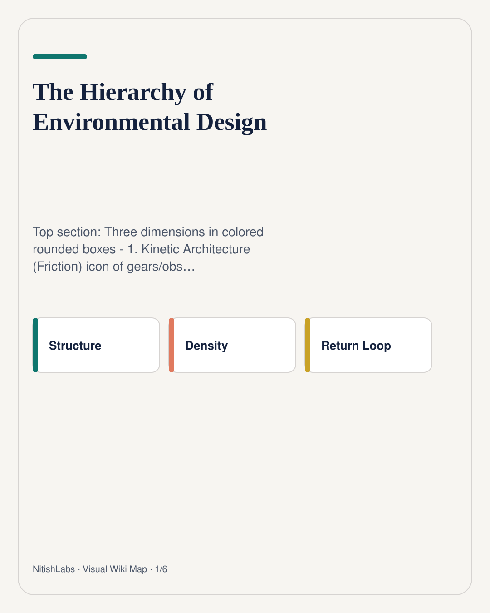
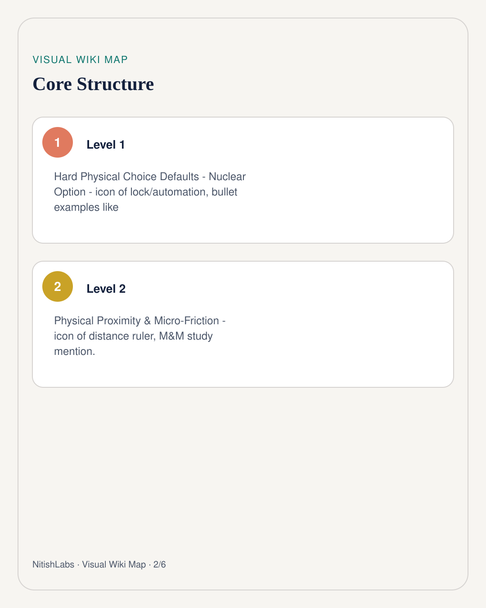
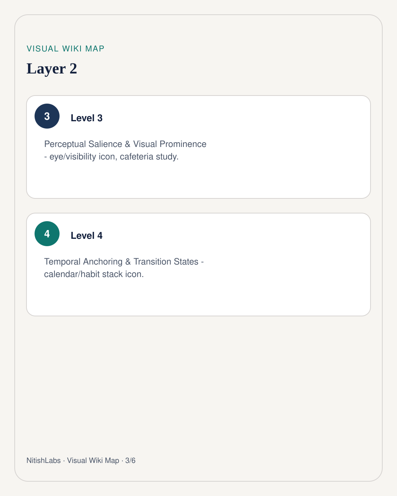
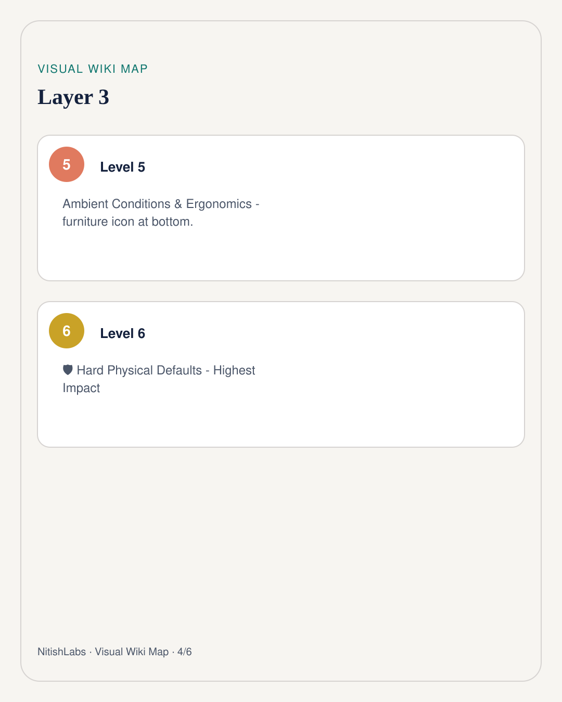
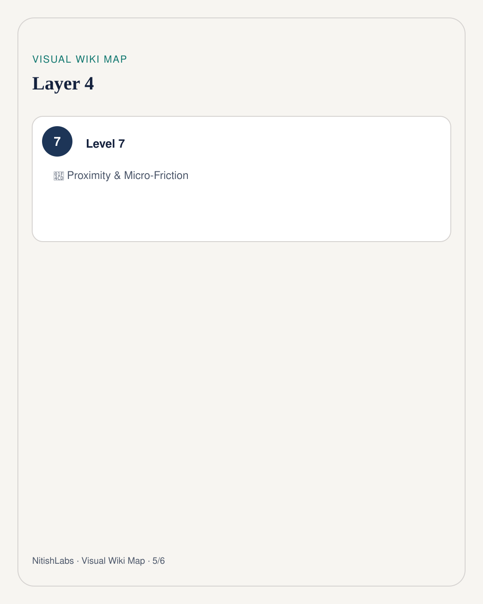
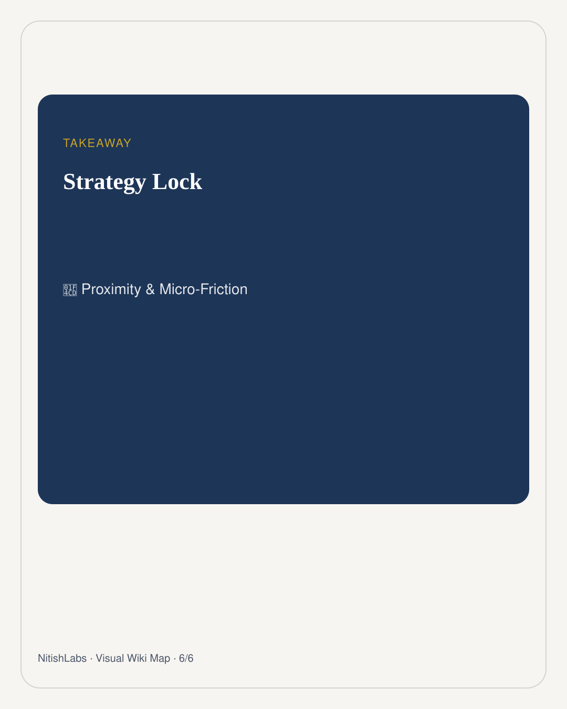

Design the Room, Not Just Your Willpower
Friction is the universal currency - how hard defaults, proximity, salience, time anchors, and ambient conditions quietly steer behavior.
Visual Wiki Map
Compressed schema carousel · swipe






Structure
- Hard Physical Choice Defaults - Nuclear Option - icon of lock/automation, bullet examples like
- Physical Proximity & Micro-Friction - icon of distance ruler, M&M study mention.
- Perceptual Salience & Visual Prominence - eye/visibility icon, cafeteria study.
- Temporal Anchoring & Transition States - calendar/habit stack icon.
- Ambient Conditions & Ergonomics - furniture icon at bottom.
- 🛡️ Hard Physical Defaults - Highest Impact
- 📍 Proximity & Micro-Friction
Notes
Sharing content with you, I want you to convert it into Pinterest size, Pinterest type, compressed visual information schemas. Dear friends, I'm also sharing with you a Pinterest post where the big large concepts have been compressed beautifully with the proper spacing, taxonomy, topography, and density. Let's try this out! The information I provided, try to convert it into a Pinterest-style post, and you can make three different versions of this based upon the preference. We will choose one of them. Try to make sure that you use colors and basic elements of space and architectural designs to ensure that the post content is readable and the entire flow of information is graspable.
Create a tall vertical Pinterest-style infographic (ratio 2:3 or taller, like 1000x1500 pixels) with clean modern design, white/light gradient background, bold sans-serif typography, vibrant accent colors (deep teal, coral, gold, navy). Title at top in large elegant font: "Design the Room, Not Just Your Willpower" with subtitle "Friction is the Universal Currency - James Clear & Behavioral Science".
Top section: Three dimensions in colored rounded boxes - 1. Kinetic Architecture (Friction) icon of gears/obstacles in teal, 2. Perceptual Salience (Attention) eye icon in coral, 3. Temporal Anchoring (Time) clock icon in gold.
Main section: Numbered hierarchy pyramid or stepped list from top (most powerful #1) to bottom (#5):
1 / 41 1. Hard Physical Choice Defaults - Nuclear Option - icon of lock/automation, bullet examples like router blocks.
2. Physical Proximity & Micro-Friction - icon of distance ruler, M&M study mention.
3. Perceptual Salience & Visual Prominence - eye/visibility icon, cafeteria study.
4. Temporal Anchoring & Transition States - calendar/habit stack icon.
Source capture: Pinterest-Visual-Information-Compression.pdf